Workshop 2 - Correlation & Simple Linear Regression in Jamovi
Research Methods and Statistics - T2 2026
Introduction
Welcome back! Last week you learned to drive Jamovi: opening data, cleaning it, and producing descriptives. This week we ask our first real research question of the trimester and answer it with correlation and simple linear regression (SLR).
You met all of these ideas in Lecture 4 - Association Between Groups (r, r², the regression equation ŷ = a + bx, assumptions, outliers). Today is where you run them on real data, check the assumptions yourself, and practise writing the results up in plain English.
You can come back to this page any time you need a reminder of how to do something in Jamovi.
What you’ll do today
- Explore a new dataset with descriptives and histograms
- Run a correlation (Pearson’s r) and interpret its direction and strength
- Build a scatterplot with a regression line
- Run a simple linear regression, write the equation, and use it to predict
- Check the assumptions (normality of residuals, homoscedasticity) and consider outliers
- Finish with the group Portfolio of Evidence activity (counts for marks this time, details at the end)
This week’s dataset looks at aerobic athletic prediction focusing on resting heart rate vs. VO₂max (a measure of aerobic fitness). Unlike the Titanic data, this one is related to health statistics.
Why correlation & regression?
Correlation and simple linear regression both examine the relationship between two continuous variables, but they answer slightly different questions:
| Question | Tool | What you get |
|---|---|---|
| How strongly do these two variables move together, and in which direction? | Correlation (Pearson’s r) | One number between −1 and +1 |
| Can I predict one variable from the other, and by how much? | Simple linear regression | An equation: ŷ = a + bx, plus r² |
Correlation is descriptive and symmetric: the correlation between height and weight is identical to the correlation between weight and height. Regression is directional and predictive: you must choose which variable is the predictor (x) and which is the outcome (y), and the equation lets you plug in an x and predict a y. (This is why swapping the axes in Task 3 would change your regression equation, even though it wouldn’t change r.)
One thing r cannot see: curves. Pearson’s r only measures straight-line association. Two variables can have a strong, perfectly real relationship that happens to be curved (think drug dose vs. benefit: rises, peaks, then falls), and r can come out near zero. This is why the golden rule of this workshop is: always plot your data first. If the scatterplot isn’t roughly a straight-line cloud, r and the regression line will mislead you.
A real-world example… a pharmacist might examine the relationship between drug dose and plasma concentration. Correlation tells them how strongly the two are associated (e.g. r = 0.85, a very strong positive relationship), while regression provides the equation to predict plasma concentration from a given dose, crucial for therapeutic drug monitoring and dosing decisions.
Pearson vs. Spearman, in passing. Pearson’s r (what we use) measures linear association between two continuous variables and is a parametric statistic. You may also see Spearman’s rho in Jamovi’s options, a rank-based (non-parametric) cousin used when data are ordinal or badly non-normal. In this course we focus on parametric tests (plus chi-square later), so Pearson is our tool, but it’s good to recognise Spearman when you see it in papers.
Two short videos on running a Correlation Matrix and Linear Regression by datalabcc on YouTube. Note both videos use more than two variables (multiple regression); we only cover simple (two-variable) correlation and regression in this course, so the ideas transfer, just ignore the extra variables.
The regression essentials
Work through these tabs before starting the tasks. They’re the theory from Lecture 4 condensed into what you need at the keyboard, plus a first friendly look at three new columns (SE, t, p) that will appear in your output.
From Lecture 4, the simple linear regression line is:
\[\hat{y} = a + bx\]
| Symbol | Name | Meaning |
|---|---|---|
| \(\hat{y}\) | predicted value | the outcome the line predicts (the “hat” = predicted, not actual) |
| \(a\) | intercept | predicted y when x = 0 |
| \(b\) | slope | how much y changes for every 1-unit increase in x |
| \(x\) | predictor | the value you plug in |
And remember the residual = actual y − predicted ŷ, the vertical distance from each point to the line. A positive residual means the person sits above the line (the model under-predicted them); a negative residual means they sit below it (over-predicted).
Where does “the” line come from? Imagine laying a ruler through the scatterplot by eye, you could draw hundreds of plausible lines. The regression line is the single line that makes the squared residuals as small as possible (the least squares line). Squaring does two useful things: it stops positive and negative misses cancelling out, and it punishes big misses much more than small ones, which is exactly why one extreme outlier can drag the whole line (Task 5).
Two numbers, two jobs:
- r (correlation coefficient): direction and strength of the linear association, from −1 to +1. It’s an effect size.
- r² (coefficient of determination): the proportion of variance in y explained by x, from 0 to 1. Multiply by 100 to talk in percentages (“x explains 31% of the variance in y”). r² is literally r × r, so the sign always disappears.
| r value | Strength of association |
|---|---|
| 0.00–0.10 | negligible |
| 0.10–0.30 | weak |
| 0.30–0.50 | weak-to-moderate |
| 0.50–0.70 | moderate |
| 0.70–0.90 | strong |
| 0.90–1.00 | very strong |
The sign (+/−) never affects strength, r = −0.55 and r = +0.55 are equally strong, just in opposite directions. And remember these are guidelines, not laws: in some fields an r of 0.20 is a big deal.
Simple linear regression trusts your data to behave. From Lecture 4, the assumptions (and how we check each one today):
| Assumption | What it means | How we check it in Jamovi |
|---|---|---|
| Linearity | X and Y follow a straight-line relationship | Scatterplot (Task 3), does a line make sense? |
| Independence | Each observation is unrelated to the others | Can’t check with a plot! It comes from study design (one row = one separate person) |
| Normality | The residuals are normally distributed | Q-Q plot of residuals (Task 4b) |
| Homoscedasticity | The spread of residuals is constant along the line | Residuals vs. fitted plot, look for funnelling (Task 4b) |
| No influential outliers* | Extreme points can drag the whole line | Boxplot of residuals / 3s rule (Task 5) |
*not strictly an assumption, but outliers can distort b, r and r², so we treat them with care.
Why bother checking? Jamovi will happily draw a line and print p-values through any data, it never warns you. If the assumptions are violated, the line still exists but the p-values and predictions can no longer be trusted. The checks are your quality control, not decoration. Note two common mix-ups: (1) it’s the residuals that must be normal, not the raw variables themselves (the Task 1 histograms are a data-screening step, not the normality check); (2) homoscedasticity is about the spread of residuals staying constant, if the spread funnels outwards, your predictions get less trustworthy at that end of the line.
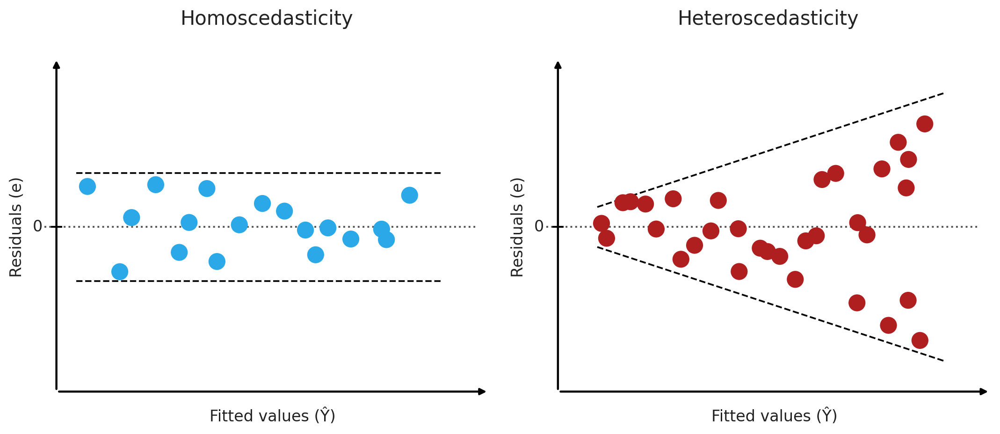
What is a Q-Q plot? It compares your actual residuals to what you’d expect if they were perfectly normally distributed. Each dot is one participant’s residual. X-axis: the value that residual “should” have if the data were perfectly normal (a theoretical quantile, written as a z-score). Y-axis: the residual’s actual standardised value. The diagonal line: where a dot lands when actual = expected, i.e. perfect normality. So the question you ask is simply “do the dots hug the diagonal?” Yes → residuals look normal. Real data always wobbles a little at the very top and bottom ends; that’s fine. A pronounced S-shape or a curve bending away from the line through the middle is the warning sign. (You’ll read your own Q-Q plot in Task 4b.)
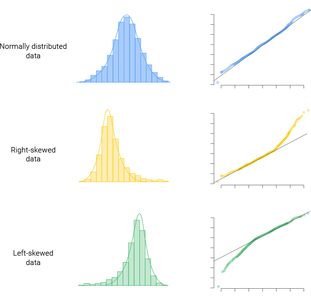
Residual plots: Jamovi gives you three. Let’s just worry about the first (Fitted) it is the important one, residuals plotted against your regression line’s predictions. The other two plot residuals against each individual variable we can ignore today. A funnel = heteroscedasticity (violation of assumption), meaning the model predicts some people much better than others, so predictions (and p-values) become less reliable at the wide end of the funnel.
When you run a regression, Jamovi shows more columns than we’ve met so far. Here’s your first gentle introduction, we’ll cover the full machinery (z-, t-, F-, and chi-square tests) later in the trimester under hypothesis testing. For today, this plain-English version is all you need:
| Column | Plain-English meaning |
|---|---|
| Estimate | The two numbers that build your line. The Intercept row is a; the row named after your predictor (here “Resting Heart Rate”) is the slope b. Read the table one row at a time, left to right: each row gives that number’s Estimate, then its SE, t and p. |
| SE (standard error) | How precise that estimate is. Ask: “if I repeated this whole study with a fresh sample of 150 people, how much would this number wobble?” Small SE = we’ve pinned the number down tightly; big SE = it’s fuzzy. (Same idea as SEM from Week 1, but for a slope instead of a mean.) |
| t | The estimate divided by its SE, i.e. “how many SEs is this estimate away from zero?” A big value (far from 0, in either direction) = the effect stands out clearly from the noise |
| p | If there were truly no relationship, how often would random sampling alone produce a result at least this strong? Small p (below 0.05 by convention) = hard to explain away as chance, we call it statistically significant |
So, reading the slope row of our example output as one sentence: “the slope Estimate is −0.61, it’s pinned down to within an SE of 0.07, that’s about 9 SEs from zero (t ≈ −8.8), so p is tiny.” That single row is the whole regression in a nutshell.
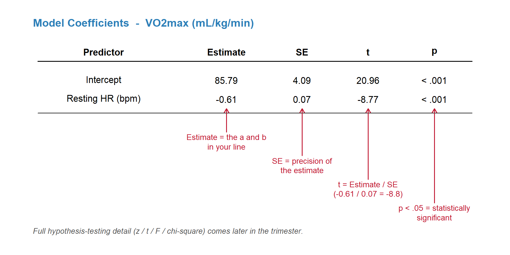
Notice the chain: t = Estimate ÷ SE, and p is calculated from t. So the three new columns are really one idea, how confidently does this estimate stand out from zero (i.e., no association)? File that away; it’s the seed of everything in the hypothesis-testing weeks.
Two things p does NOT mean (the most common exam traps in statistics, we will have a dedicated lecture to this):
- p is not the probability that the relationship is real, and 1 − p is not your “confidence” in the result. p only describes how surprising your data would be in a world where no relationship exists.
- A small p does not mean the effect is big or important. With a huge sample, even a tiny, useless correlation becomes “significant”. p answers “is it detectable?”; r and r² answer “how big is it?” You need both, which is why our write-up template reports both.
Get the practice file
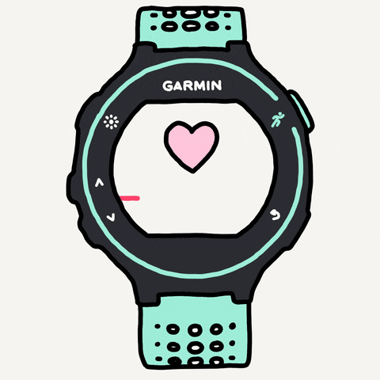
- Dataset: hr_vo2.omv
Save the dataset somewhere easy to find, then open it in Jamovi.
Research question
Can we predict someone’s fitness (Maximal Oxygen Consumption, VO₂max) from their resting heart rate?
Before you touch anything: which variable is the predictor (x) and which is the outcome (y)? Physiologically, a lower resting heart rate reflects a fitter heart, so we’ll use Resting Heart Rate → predictor and VO₂max → outcome.
Tasks for you to do
Work through these in Jamovi in order, then check your answers as you go, each task has a small answer box. Type (or select) what you found and press ✓ Check. You’ll get instant feedback, and a hint appears if you’re stuck after a couple of tries.
The full Worked answer for each task is locked until you answer correctly, and if you’re really stuck, a reveal option appears after three attempts, so have a genuine go first. A fully worked version (with screenshots of every output) is released after all lab classes finish for the week.
Task 1 — Descriptives & histograms
First, get to know the data (this should feel like last week):
- Check the Variables tab: are the names sensible, and are the measure types right (
id= ID,sex= nominal,age,Resting Heart Rate,Maximal Oxygen Consumption= continuous)? - Run Exploration ▸ Descriptives on the two primary variables (Resting HR and VO₂max): N, missing, mean, median, SD, min, max.
- Tick Histogram (and Density) under Plots. Is each variable roughly normal, or skewed?
Why screen first? Three quick sanity checks before any analysis: impossible values (e.g. a resting HR of 300 bpm is a typo, not a person), missing data (does N match the number of participants you expected?), and shape (a heavily skewed variable is a heads-up to look extra carefully at the scatterplot and residual checks later). Note this is not the formal normality assumption, that applies to the residuals and gets checked properly in Task 4b.
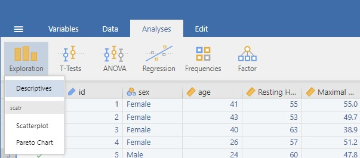
From your Descriptives table:
Worked answer locked. Answer correctly above to unlock it.
| N | Missing | Mean | Median | SD | Min | Max | |
|---|---|---|---|---|---|---|---|
| Resting HR (bpm) | 150 | 0 | 58.77 | 59.00 | 4.99 | 46.0 | 81.0 |
| VO₂max (mL/kg/min) | 150 | 0 | 49.95 | 50.30 | 5.17 | 33.3 | 63.1 |
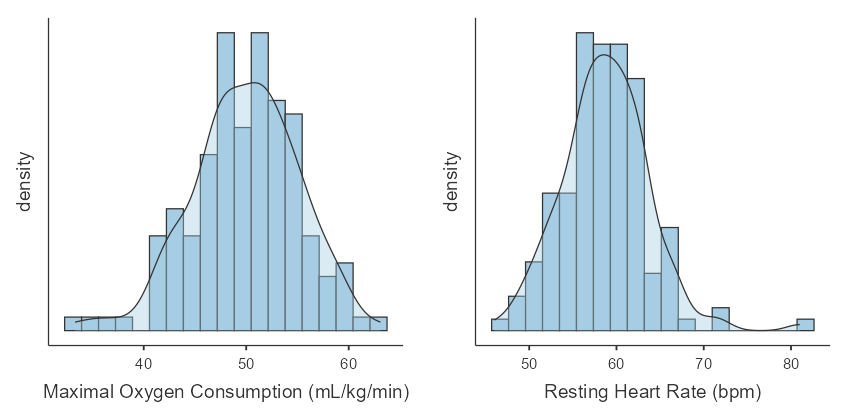
Nothing impossible in the min/max, no missing data, and both distributions look approximately normal (mean ≈ median is another quick clue). Good to proceed. (If you saw a resting HR of 300 here, you’d deal with it before any correlation, exactly like the Titanic age of 224 last week.)
Task 2 — Correlation (Pearson’s r)
- Go to Analyses ▸ Regression ▸ Correlation Matrix
- Move both variables of interest into the box on the right
- Your output should look like the one below (similar, not identical values)
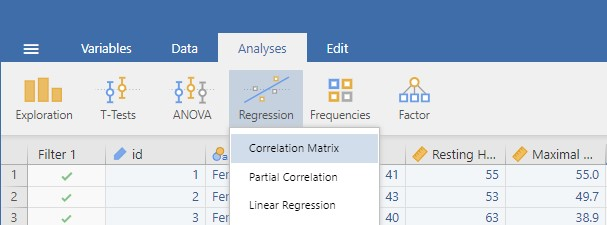
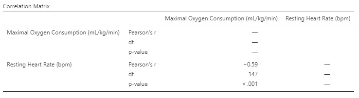
In the output we care about Pearson’s r, the correlation coefficient. You’ll also see df (degrees of freedom = n − 2). Don’t worry about df for now, it’s a book-keeping number the test needs and we’ll meet it properly in the hypothesis-testing weeks; just report it. Finally there’s a p-value: here it is tiny (p < .001), which we state as resting heart rate is significantly correlated with VO₂max.
From your Correlation Matrix:
Interpret the r value (direction and strength, using the benchmarks table in the r vs r² tab):
Worked answer locked. Answer correctly above to unlock it.
r(148) = −0.55, p < .001.
- Direction: negative, higher resting heart rate goes with lower VO₂max.
- Strength: by the Lecture 4 bands this is moderate (0.5–0.7).
- df = 148 because df = N − 2 = 150 − 2.
- p < .001: if there were truly no relationship between resting HR and VO₂max in the population, random sampling would almost never produce a correlation at least this strong in a sample of 150. In a sentence: resting HR is significantly correlated with VO₂max. Careful though: this does not mean there’s a >99.9% chance the relationship is real.
Beyond direction, r is an effect size: it tells us how meaningful the relationship is in practical terms, and unlike p, it doesn’t inflate just because the sample is big. What counts as “meaningful” depends on your field; in some areas r = 0.20 is a big deal! We’ll unpack practical vs. statistical significance later in the trimester.
Task 3 — Scatterplot (visualising the SLR)
- Navigate to Exploration ▸ Scatterplot
- Put your predictor in the
X-Axisbox and your outcome in theY-Axisbox - Under
Regression line, tick Linear to overlay the SLR line
Newer versions of Jamovi also let you build a scatterplot straight from the Plots tab (in the variable setup screen, before you hit edit). Either route gives the same picture, we’ll use Exploration ▸ Scatterplot here so everyone’s on the same menu.
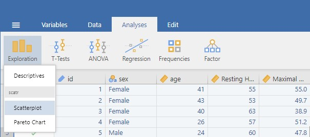
Which variable goes on which axis?
Worked answer locked. Answer correctly above to unlock it.
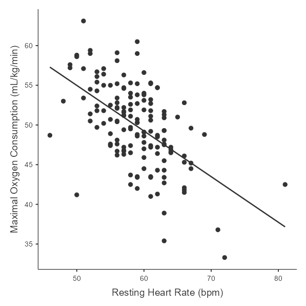
While you’re here, do the first two assumption checks by eye:
- Linearity: the cloud of points follows a straight downward trend, a line is a sensible model (no obvious curve or U-shape).
- Outliers: scan for points sitting far from the pack, especially far vertically from the line, or way out at the ends of the x-axis (those have the most leverage to tilt the line). One point low-left sits noticeably below the pack, keep an eye on it; Task 5 shows you how to handle it formally.
This is also the plot you’d put in a report: readers grasp “downhill-sloping cloud” faster than any table.
Task 4a — Simple Linear Regression (SLR)
- Navigate to Analyses ▸ Regression ▸ Linear Regression
- Put your predictor (Resting Heart Rate) in
Covariatesand your outcome (VO₂max) inDependent Variable - Your output has two sections: Model Fit Measures and Model Coefficients
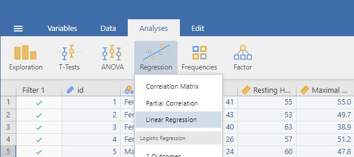
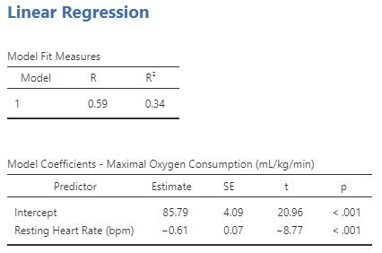
Reading the example:
- Model Fit ▸ R²: the proportion of variance in VO₂max explained by resting HR, multiply by 100 for a percentage. In simple linear regression, R² is just your Task 2 correlation squared, check it: (−0.59)² ≈ 0.34 ✓
- Model Coefficients ▸ Estimate: the Intercept (predicted VO₂max when resting HR = 0) and the slope for Resting Heart Rate (change in predicted VO₂max per 1 bpm)
- SE, t, p: precision, signal-vs-noise, and chance, exactly as in the Reading the output tab. Notice t = Estimate ÷ SE (try it: −0.61 ÷ 0.07 ≈ −8.8 ✓)
Jamovi’s regression also reports R (capitalised for some reason) under Model Fit. It’s always shown as positive, so it tells you strength but not direction, that’s why we ran the correlation first in Task 2 (which keeps the minus sign). To avoid confusion you can untick “R” under Model Fit and take direction from your Task 2 correlation.
From your regression output, build the equation ŷ = a + bx:
Use your equation to predict the VO₂max of a person with a resting HR of 60 bpm:
Worked answer locked. Answer the first box correctly to unlock it.
\[\widehat{VO_2max} = 83.73 + (-0.57 \times \text{Resting HR})\]
- Intercept = 83.73: the model’s predicted VO₂max at a resting HR of 0 bpm. Obviously nobody has a resting HR of 0, the intercept is a mathematical anchor for the line, not always a physiologically meaningful value (this is extrapolation territory from Lecture 4). Don’t be tempted to interpret it as a real person.
- Slope = −0.57: every extra 1 bpm of resting heart rate predicts a VO₂max ≈ 0.57 mL/kg/min lower, on average. Individuals will vary around that; the slope describes the trend, not any one person.
- R² = 0.31: resting HR explains 31% of the variance in VO₂max. The other 69% is due to things we didn’t measure (age, training, genetics…) plus measurement noise. A useful predictor can still leave most of the variance unexplained, 31% from a single, easy-to-measure variable is genuinely useful.
- The new columns: slope SE = 0.07 (a tight estimate), t = −0.57 ÷ 0.07 ≈ −8.1 (the slope is about 8 standard errors away from zero, a very clear signal), p < .001 (a slope this steep would essentially never arise by chance if the true slope were zero).
Worked answer locked. Answer the prediction correctly to unlock it.
\[\hat{y} = 83.73 - 0.57 \times 60 = 83.73 - 34.5 = 49.2 \text{ mL/kg/min}\]
A resting HR of 60 bpm predicts a VO₂max of about 49 mL/kg/min. (Small print: if you rounded the slope to −0.57 you’d get ≈ 49.5, using Jamovi’s fuller −0.57 gives 49.2, that’s rounding, not an error.) Two health warnings on every prediction:
- It’s the average expectation for people with that resting HR; real individuals scatter around it (that scatter is the residuals, and with R² = 0.31 there’s plenty of it).
- Keep predictions inside the range of your data (here roughly 46–81 bpm). Plugging in HR = 20 or HR = 200 would be extrapolation: the line keeps going mathematically, but you have no evidence the relationship stays linear out there.
Task 4b — Check the assumptions
- In your regression analysis (Task 4a), expand Assumption Checks
- Tick Q-Q plot of residuals (checks Normality) and Residual plots (checks Homoscedasticity)
Need a refresher on what you’re looking at? The Assumptions tab up in “The regression essentials” explains how to read a Q-Q plot (do the dots hug the diagonal?) and what funnelling looks like on a residuals-vs-fitted plot. Pop back up there if either plot is unfamiliar when you run it, then interpret your own output below.
1. Normality — Q-Q plot of residuals. In Jamovi, look at your Q-Q plot: each dot is one participant’s residual, and the question is simply whether the dots hug the diagonal.
In your Jamovi Q-Q plot, how do the residuals look?
Worked answer locked. Interpret your Q-Q plot correctly to unlock it.
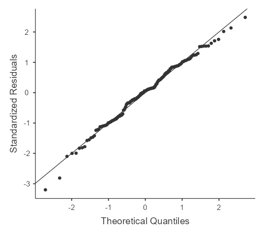
The dots track the diagonal closely through the middle, with only a little wobble at the low end and one point sitting high at the top-right (the same extreme participant you’ll meet in Task 5). Real data always wobbles at the very tails; it’s a systematic S-shape or a bend through the middle that would worry us, and we don’t see that here → residuals approximately normal → Normality ✓
2. Homoscedasticity — Residuals vs. Fitted. Now look at your residuals-vs-fitted plot in Jamovi, scanning the width of the band across the plot for funnelling.
Does your residuals-vs-fitted plot in Jamovi meet homoscedasticity?
Worked answer locked. Interpret your residuals-vs-fitted plot correctly to unlock it.
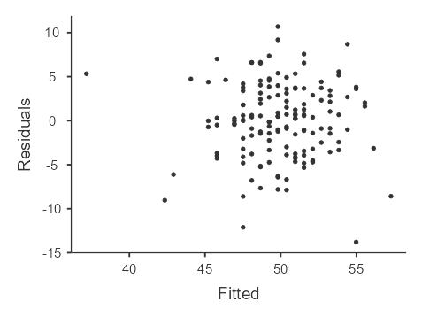
An even band around zero with no funnel and no curve → Homoscedasticity ✓ (and linearity looks fine). That one high residual near the top is a single point, not a change in spread, so it doesn’t break the assumption.
The remaining two assumptions aren’t read off this plot: Linearity was already checked by eye in Task 3 ✓, and Independence comes from the study design — each row is a different person measured once ✓ (it would be violated if, say, some participants were measured twice).
If a check failed, you wouldn’t necessarily throw the analysis away; you’d report the violation and interpret with caution or use a different model (beyond this course). What you must never do is simply not look, an unchecked assumption is a hidden asterisk on every number you report.
Task 5 — Removal of outliers (optional)
Optional due to time. Outlier removal isn’t always appropriate; it’s up to you to analyse with and without, then justify and report your choice.
Identify-and-remove should only be performed once. Removing initial outliers shrinks the SD of the residuals, which can make previously normal points look like new “outliers” in the re-run.
Save and inspect the residuals. In your regression (Task 4a), open the Save panel and tick Residuals (and Predicted values if you like). Now run Exploration ▸ Descriptives on that saved Residuals column and tick Box plot under Plots. Outliers appear as individual points beyond the whiskers.
How many outliers here? On our data the residual boxplot flags exactly one point beyond the whiskers, id 6 (a participant whose VO₂max sits about 3 SDs below what their resting HR predicts). That is the only point that meets the boxplot (1.5xIQR) or 3s rule (refresh Lecture 3 if needed).
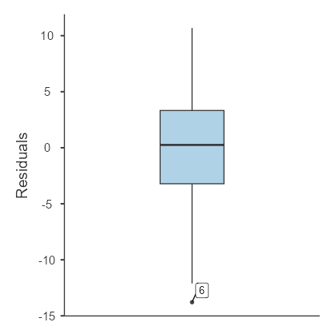
Filter & re-analyse. Go to Data ▸ Filters and create id != 6. With the filter active your regression re-runs automatically. Compare the two sets of results:
| r | slope (b) | R² | p | |
|---|---|---|---|---|
| All data (N=150) | −0.55 | −0.57 | 0.31 | < .001 |
| Minus id 6 (N=149) | −0.59 | −0.61 | 0.34 | < .001 |
Removing that one point nudges the relationship from moderate to a touch stronger (r −0.55 → −0.59; R² 0.31 → 0.34), but the direction, the significance, and the overall story are unchanged. That’s the sign of a robust result. Whether you keep or drop id 6, the honest move is to report you tested both and say what you landed on in the end. The official name for this is process is a Sensitivity Analysis which checks if your results change when you alter your data or methods (can be applied to most types of tests/models).
How I would justify removal even when it wasn’t an erroneous data-point: “A single outlier (id 6) was detected through residual analysis and excluded to test the robustness of the model. Its removal did not change the direction or significance of the relationship, and altered the slope and R² only slightly, confirming that the association between VO₂max and resting heart rate was not dependent on this extreme value.”
You find one legitimate (not erroneous) extreme value. Best practice is to:
Putting it into words
The numbers only matter if you can communicate them. Here’s the full interpretation for today’s analysis, this is the template for your studies for future exams (short answer output interpretation). (These numbers are for the full dataset, N = 150; if you also ran the outlier-removed version, you’d report both.)
Pearson’s correlation showed a moderate negative relationship between resting heart rate and VO₂max, r(148) = −.55, p < .001: higher resting heart rates were associated with lower fitness. Resting heart rate was a significant predictor of VO₂max (VO₂max = 83.73 − 0.57 × Resting HR, p < .001). For every 1 bpm increase in resting heart rate, predicted VO₂max decreased by about 0.57 mL·kg⁻¹·min⁻¹. The model explained 31% of the variance in VO₂max (R² = 0.31). Assumption checks (Q-Q and residual plots) showed no violations of normality or homoscedasticity.
Notice the anatomy: direction + strength + statistic (r, with its df), the equation, the slope in plain units, variance explained (r²), and a one-line assumptions statement. Every sentence pairs a number with its plain-English meaning.
Correlation still does not imply causation. We predicted fitness from resting HR; we did not show HR causes fitness (or vice versa). Age, training history and genetics are classic lurking/confounding variables here. Notice how careful the template above is: “associated with”, “predictor”, “predicted”, never “causes”, “lowers”, or “improves”. Be careful with your vocabulary.
Five classic traps (cheap marks in the exam, expensive mistakes):
- “Significant” ≠ “big”. p tells you the relationship is detectable; r and r² tell you how big it is. Report both.
- r ≠ r². r = −0.55 is the correlation; r² = 0.31 is the variance explained. Don’t say “the correlation was 31%”.
- The slope is not the correlation. b = −0.57 is in real units (mL/kg/min per bpm) and depends on the units of measurement; r is unit-free and capped at ±1. They just happen to look similar here, pure coincidence.
- Prediction runs one way. Our equation predicts VO₂max from HR. To predict HR from VO₂max you’d need to re-run the regression with the variables swapped, you can’t just rearrange the equation.
- Don’t extrapolate. The equation is only trustworthy inside the range of resting HRs actually observed in the sample (≈ 46–81 bpm) and even within that it gets less reliable toward the extremes.
How this links to assessment
- Today’s workflow (descriptives → correlation → scatterplot → regression → assumptions → interpretation) is how we will frame all our tests as we move through the trimester and you will be tested on in the Exams.
- The exams may include Jamovi output or interpretation questions in this style as well.
- And most immediately… the group activity (next) counts towards your Portfolio of Evidence and has lab specific questions.
That’s it for Jamovi today.
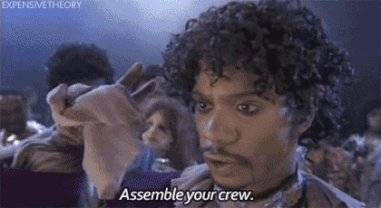
Now get ready for the group Portfolio of Evidence activity (20mins). Unlike last week, this one counts for marks:
Put all phones, laptops, electronic devices away
Turn off the lab computers
You can have a calculator, ruler, pen
You can write/draw on the exam sheet
Please include all names and s numbers for all group members
1 mark for first correct scratch, 1/2 mark for second, 1/4 for third, 0 for forth and fifth
Work together as a team :)
Getting help
During the session I’ll circulate to help, don’t be afraid to ask. After the workshop, revisit this page, check your module notes for interpretation help, or post in the Microsoft Teams channel, email me, or book an office hours meeting.
References
[1] The jamovi project (2024). jamovi. (Version 2.6) [Computer Software]. Retrieved from https://www.jamovi.org.
[2] R Core Team (2024). R: A Language and environment for statistical computing. (Version 4.4) [Computer software]. Retrieved from https://cran.r-project.org.
Document prepared by Aaron Bach using Quarto.